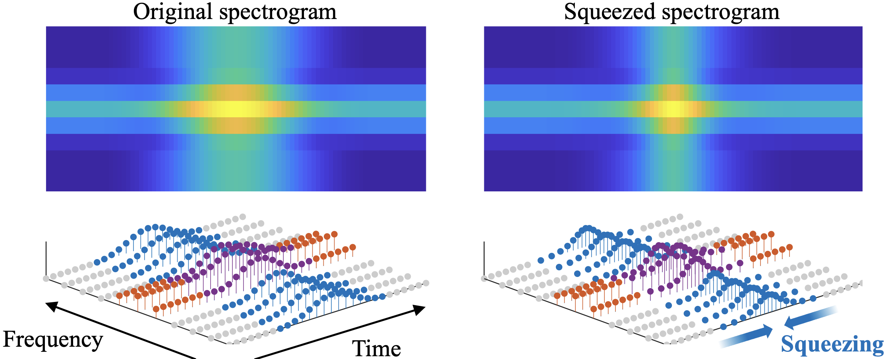

Natsuki Akaishi, Kohei Yatabe, Yasuhiro Oikawa
Abstract: Time stretching of music signals has a crucial problem, i.e., smearing of percussive sounds. Some time stretching algorithms have addressed this problem by detecting percussive components and manipulating them differently from the other components. However, conventional methods cause artifacts. In this paper, to prevent percussion smearing, we propose a preprocessing for time stretching. The proposed algorithm aims to preserve time scale of percussive components while stretching the rest of components in the usual way. To do so, time-frequency bins dominated by percussive components are squeezed in time direction so as to preserve the shape of spectrogram of percussive components. Our experiment showed that our method can improve sound quality for long stretching.

STAY TUNED...!